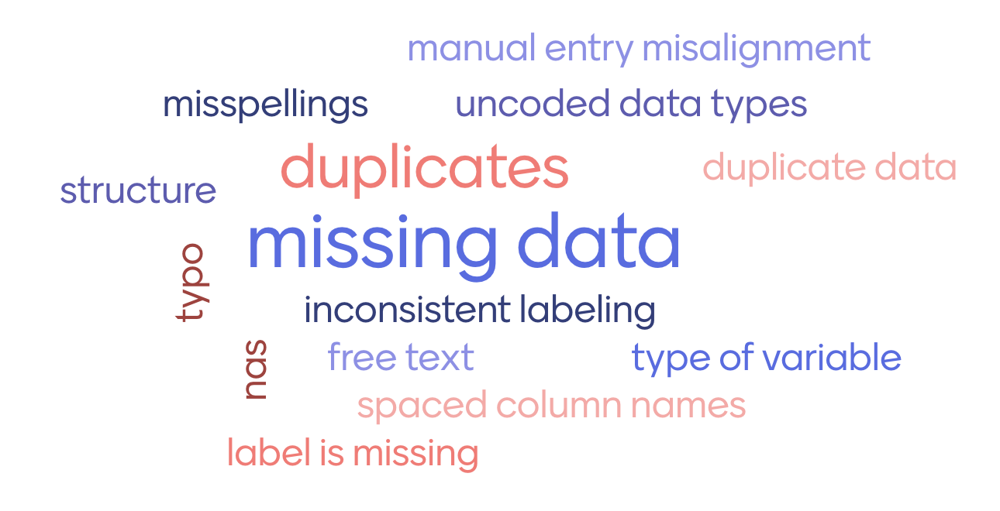

# A tibble: 6 × 4
Inst AvNumPubs AvNumCits PctCompletion
<chr> <dbl> <dbl> <dbl>
1 ARIZONA STATE UNIVERSITY 0.9 1.57 31.7
2 AUBURN UNIVERSITY 0.79 0.64 44.4
3 BOSTON COLLEGE 0.51 1.03 46.8
4 BOSTON UNIVERSITY 0.49 2.66 34.2
5 BRANDEIS UNIVERSITY 0.3 3.03 48.7
6 BROWN UNIVERSITY 0.84 2.31 54.6What is “Messy Data”?
2025-08-28
What is “Messy Data”?
complex, real-world data sets
What aspects of messiness have you seen in data that you don’t see in classroom examples?
Aspects of messy data
Word cloud of results from a survey of ~40 data analysts asked about “messy data”. Missing values are listed as the most common problem.
Why do we need tidy data?
Messy data stands in the way of accurate conclusions:
- Accurate results: eliminates errors and bias
- Valid conclusions: prevents misleading insights
Tidy and messy data

Illustrations from the Openscapes blog Tidy Data for reproducibility, efficiency, and collaboration by Julia Lowndes and Allison Horst
Varying degree of messiness
Cryptic Names
What are the variables? What are the observations?
More cryptic
What’s in the column names of this data? What are the experimental units? What are the measured variables?
# A tibble: 3 × 12
id `WI-6.R1` `WI-6.R2` `WI-6.R4` `WM-6.R1` `WM-6.R2` `WI-12.R1` `WI-12.R2`
<chr> <dbl> <dbl> <dbl> <dbl> <dbl> <dbl> <dbl>
1 Gene 1 2.18 2.20 4.20 2.63 5.06 4.54 5.53
2 Gene 2 1.46 0.585 1.86 0.515 2.88 1.36 2.96
3 Gene 3 2.03 0.870 3.28 0.533 4.63 2.18 5.56
# ℹ 4 more variables: `WI-12.R4` <dbl>, `WM-12.R1` <dbl>, `WM-12.R2` <dbl>,
# `WM-12.R4` <dbl>Most
What are the variables? What are the records?
V1 V2 V3 V4 V5 V9 V13 V17 V21 V25 V29 V33 V37 V41 V45 V49 V53
1 ASN00086282 1970 7 TMAX 141 124 113 123 148 149 139 153 123 108 119 112 126
2 ASN00086282 1970 7 TMIN 80 63 36 57 69 47 84 78 49 42 48 56 51
3 ASN00086282 1970 7 PRCP 3 30 0 0 36 3 0 0 10 23 3 0 5
4 ASN00086282 1970 8 TMAX 145 128 150 122 109 112 116 142 166 127 117 127 159
5 ASN00086282 1970 8 TMIN 50 61 75 67 41 51 48 -7 56 62 47 33 67
6 ASN00086282 1970 8 PRCP 0 66 0 53 13 3 8 0 0 0 3 5 0
V57 V61 V65 V69 V73 V77 V81 V85 V89 V93 V97
1 112 115 133 134 126 104 143 141 134 117 142
2 36 44 39 40 58 15 33 51 74 39 66
3 0 0 0 0 0 8 0 18 0 0 0
4 143 114 65 113 125 129 147 161 168 178 161
5 84 11 41 18 50 22 28 74 94 73 88
6 0 64 3 99 36 8 0 0 0 8 36Too_much_info
What are the variables? What are the experimental units?
# A tibble: 6 × 22
iso2 year m_04 m_514 m_014 m_1524 m_2534 m_3544 m_4554 m_5564 m_65 m_u
<chr> <dbl> <dbl> <dbl> <dbl> <dbl> <dbl> <dbl> <dbl> <dbl> <dbl> <dbl>
1 ZW 2003 NA NA 133 874 3048 2228 981 367 205 NA
2 ZW 2004 NA NA 187 833 2908 2298 1056 366 198 NA
3 ZW 2005 NA NA 210 837 2264 1855 762 295 656 NA
4 ZW 2006 NA NA 215 736 2391 1939 896 348 199 NA
5 ZW 2007 6 132 138 500 3693 0 716 292 153 NA
6 ZW 2008 NA NA 127 614 0 3316 704 263 185 0
# ℹ 10 more variables: f_04 <dbl>, f_514 <dbl>, f_014 <dbl>, f_1524 <dbl>,
# f_2534 <dbl>, f_3544 <dbl>, f_4554 <dbl>, f_5564 <dbl>, f_65 <dbl>,
# f_u <dbl>Tables
What are the variables? What are the observations?
religion <$10k $10-20k $20-30k $30-40k
1 Agnostic 27 34 60 81
2 Atheist 12 27 37 52
3 Buddhist 27 21 30 34
4 Catholic 418 617 732 670
5 Don’t know/refused 15 14 15 11Gross on repeat
10 week sensory experiment, 12 individuals assessed taste of french fries on several scales (how potato-y, buttery, grassy, rancid, paint-y do they taste?), fried in one of 3 different oils, replicated twice.
First few rows:
# A tibble: 4 × 9
time treatment subject rep potato buttery grassy rancid painty
<fct> <fct> <fct> <dbl> <dbl> <dbl> <dbl> <dbl> <dbl>
1 1 1 3 1 2.9 0 0 0 5.5
2 1 1 3 2 14 0 0 1.1 0
3 1 1 10 1 11 6.4 0 0 0
4 1 1 10 2 9.9 5.9 2.9 2.2 0 What is the experimental unit? What are the factors of the experiment? What was measured? What do you want to know?
Tidy Data Conventions
- Each observation forms a row (no data info in column names)
- Each variable forms a column (no mashup of multiple pieces of information)
- Each cell contains a single piece of observation
Original definition: Tidy data (2014), Hadley Wickham
Updated: R for Data Science (ed.2), Hadley Wickham, chapter 12
‘Tidy Data’ can be messy
- ‘tidy data’ requirements are minimal - mostly allow us to work with R
student_name course grade
1 Alice Math 85
2 Alice Science 92
3 Bob Math 78
4 Bob Science 88
5 Alice Math 82
6 Alice Science 90… unfortunately not sufficient to avoid all ‘messiness’
computer science concept (originally for database design): normal forms of data